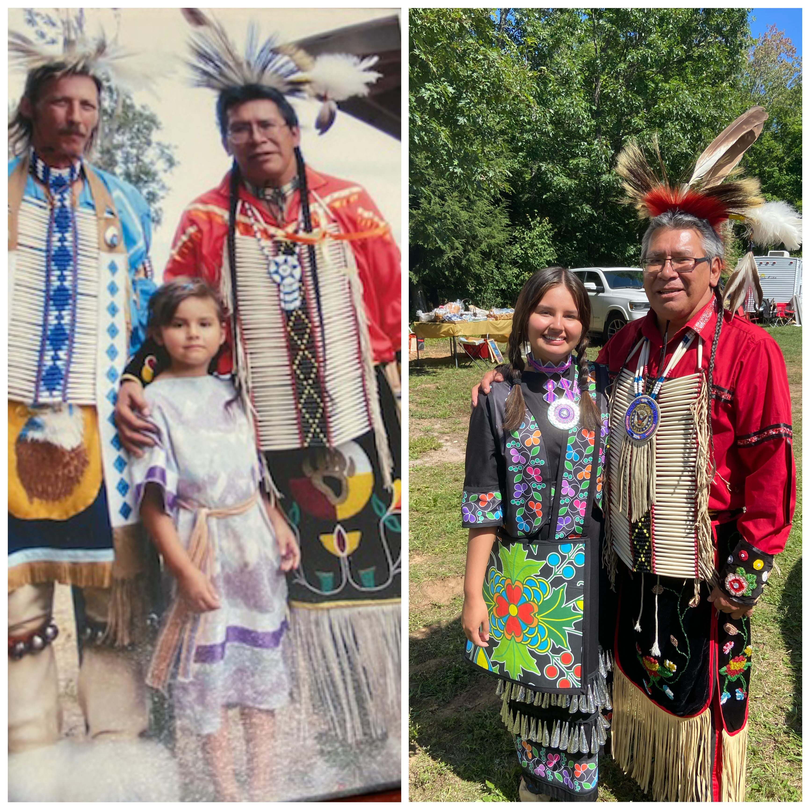

Why This Topic?
Right away I knew I wanted to do my final project on somthing involving my tribe, The Lac Vieux Desert Band Of Lake Superior Chippewa Indians. In what capcity? That I didn't know. Utimately, I chose to reimagine my tribes website. The plan was to make it some streamlined so you could find important information qucickly. I also wanted to make it seem more lively. So, I added more colors, pictures of our members, and our language.
Making something about my tribe was very improtant to me because they hold such a dear place in my heart. It is apart of who I am and my identity. I wanted my reimagining of their website to reflect how I feel and see my tribe. To me what makes us who we are is our community and language so that is why I felt it was important to showcase that.
About The Creator
My name is Maegan Mansfield and I graduated in May 2024 from UW-Milwaukee with my Bachelors of Fine Arts and a certificate in LGBTQ+ Studies. I decided to come back to school in September 2025 to gain my certificate in Digital Arts & Culture that I will be obtaining May 2026. I love being creative and gaining this certificate allows me to be creative in a whole new way, which is very important to me.
Works Cited
- Images: Flickr
- Images: LVD Website
- Images: LVD Tribe Facebook Page
- Images: LVD THPO Page
- Vector Icons: Font Awesome
